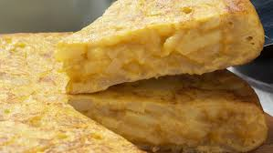

Tortilla de Patatas
Ingredientes :
- 4 patatas medianas
- 6 huevos
- 1 cebolla
- Aceite de oliva
- Sal al gusto
Pasos :
- Pelar y cortar las patatas en rodajas finas.
- Picar la cebolla y freir junto con las patatas en abundante aceite de oliva hasta que esten tiernas.
- Escurrir el aceite y mezclar las patatas con los huevos batidos en un bol.
- Verter la mezcla en una sarten y cuajar la tortilla por ambos lados.
- Servir caliente o a temperatura ambiente.

Descargar receta
Volver